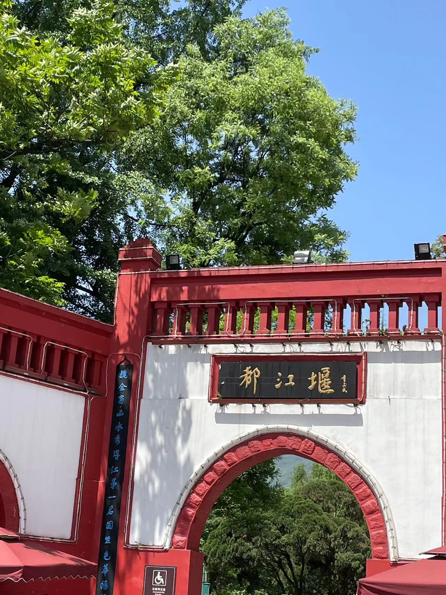
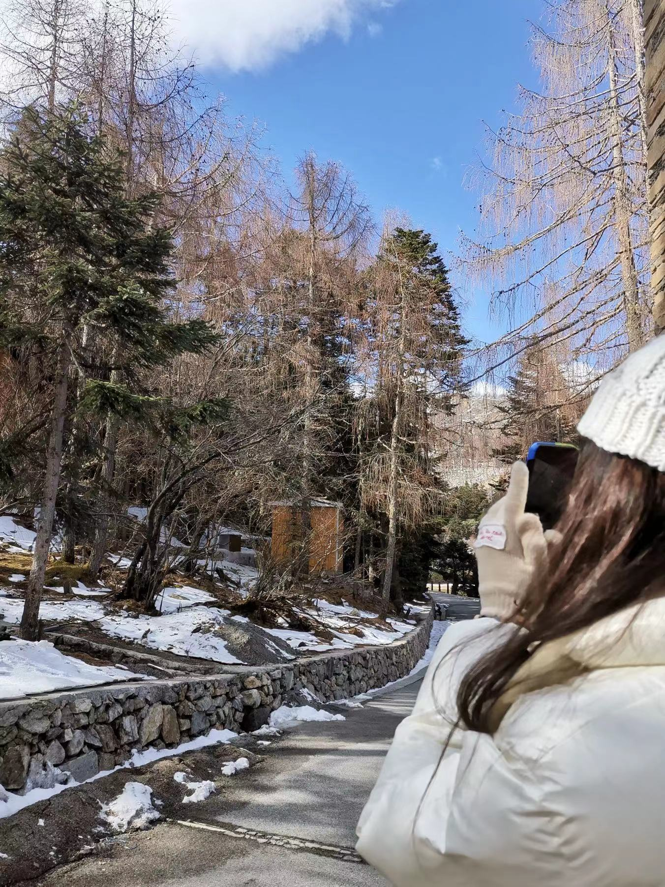
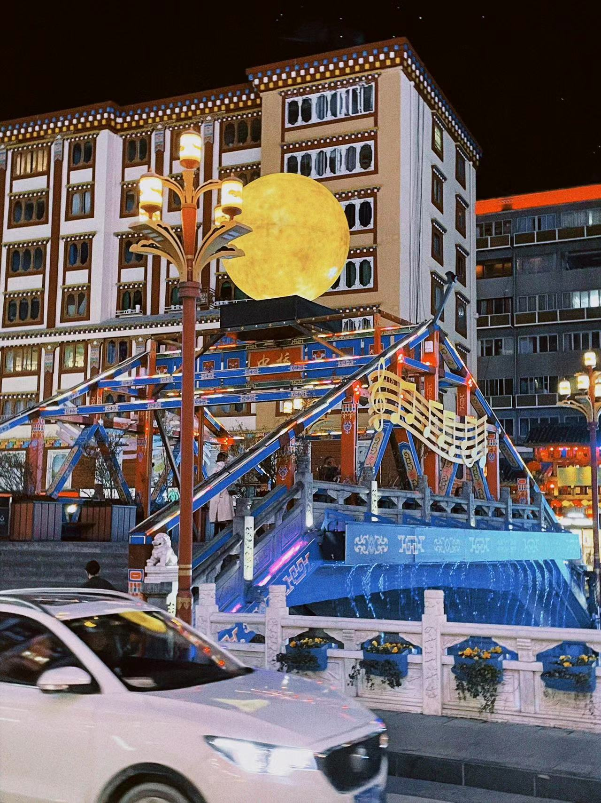
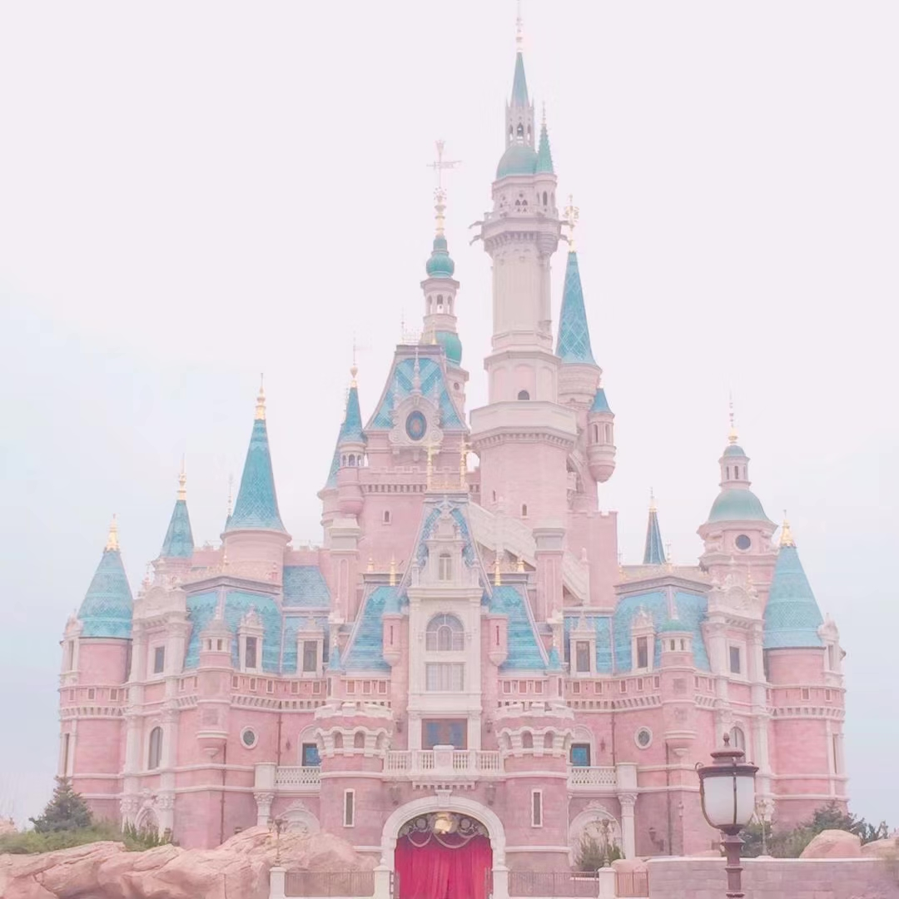

喜欢旅游
喜欢旅游的人认为旅游是一种人生态度，是享受生活，是为了拓展视野。
|  | 外出旅行，不论是去国内其他的省份，还是出国旅行，往往会体验到不同的自然风光、人文、风俗，品尝各地的美食，感受迥异的生活习惯，相比于整天宅在家里，窝在自己生活的小地方，用旅行的方式来体验生活，确实是非常不错的选择。 |
|  | 很多人选择旅行，其中一个重要的原因就是希望找到一种释放压力的方式，因为工作强度大、职业发展和晋升的压力、房贷车贷、家庭的压力、养育孩子的压力，很多人的身心处于极度紧绷和疲惫的状态，为了纾解压力，调整心情，通过一次期待已久的旅行，放下所有的压力和心理包袱，背上行囊，带着心爱的人一起，体验旅途中的惊喜、挫折、事故，让整个人的身心状态完全做一次切换，换一个视角来看待自己，你会更容易找回更好的自己。 |
|  | 在旅行的过程中，不论是旅途的安排，遇到的突发情况，遇见的形形色色的人群，还是听到的别人的历史和故事，各种民俗背后的渊源，各种优美壮观的风景，都能让你的视野变得更加的开阔，也能够学习到更多的知识。 |
|  | 旅行的意义不仅仅是出去走一圈，在旅途中，你很容易遇到各种各样的朋友，在旅途中萍水相逢，趣谈人生和理想，分享各自的看法，找到志同道合的朋友，这样的体验，往往比旅行本身的吸引力还要更大。 |